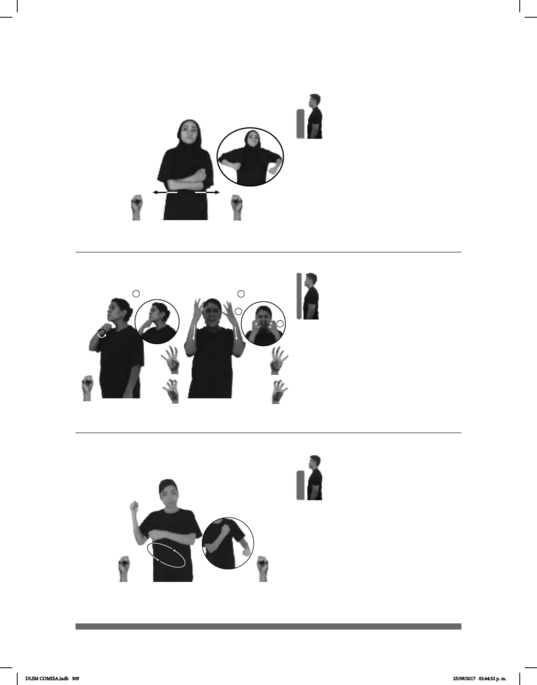

309
1
2
1
2
(S-47)
Seña: SB
MD seña que pasa de S.1;
MB S.1
MD palma hacia arriba MB
palma hacia abajo.
A la altura del pecho. MD sobre
el dorso de MB.
MD recto hacia el hombro
moviendo cada uno de los dedos
alternadamente.
Cabeza ladeada hacia
la izquierda y acción de reír.
v. intr. Ponerse gordo, aumentar
de peso.
Seña: SC: I. SM; II. SS
I. S.1; II. Seña que
pasa de 4.5 a 4.6
Iy II. Palmas hacia dentro.
I. A la altura de la barbilla;
II. De la frente a la barbilla.
I. La mano se mueve
formando un círculo; II. Recto.
Ceño fruncido,
boca abierta mostrando los dientes.
v. intr. Hacerse viejo o
anciano; perder la juventud, la fuerza o
la salud con la edad.
(S-46)
_______muy
AÑO-PASADO ESE PERRO ENGORDAR
El año pasado ese perro engordó mucho.
pro-ÉL EDAD 90 EDAD YA ENVEJECER
El tiene 90 años, ya envejeció.
Seña: SS
S.1
Palmas hacia dentro.
A la altura del pecho una
mano arriba de la otra.
Recto hacia la derecha y
hacia abajo repetidamente.
1. sust. f. Utensilio para
barrer que consiste en un manojo de
varas secas por lo general muy delga-
das, o de varitas de plástico rígido atadas
y unidas a un palo largo. 2. v. tr. Arrastrar
con una escoba o con algo similar la
basura, el polvo, etc. para quitarlo del
suelo.
(S-48)
1
2
MERCADO
derecha
BARATA MUCHA ESCOBA DIFERENTE VENDER
En el mercado venden muchas escobas baratas.
DLSM COMISA.indb 309 25/09/2017 02:44:32 p. m.